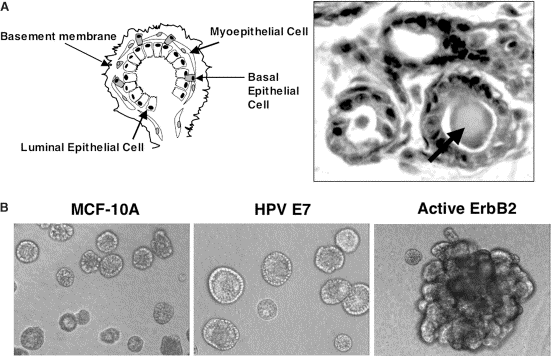

Fig. 1. Morphological architecture of mammary gland in vivo and MCF-10A acini in vitro. (A) Schematic (left) of a lobule from human mammary gland; mammary epithelium possesses a polarized architecture surrounding a hollow lumen, which is surrounded by an inner layer of luminal epithelial cells and an outer layer of myoepithelial and basal epithelial cells. A hematoxylin- and eosin-stained tissue section (right) of acini within human mammary tissue; the lumens of mammary acini in vivo often contain proteinaceous secretory material (black arrow). (B) Phase-contrast micrographs of normal and oncogene-expressing MCF-10A acini cultured on basement membrane for 20 days. Normal MCF-10A (left) acini possess a spherical architecture similar to that observed in vivo. Acini expressing HPV E7 (center) are 30% larger in size, but retain a hollow, spherical architecture, whereas activation of ErbB2 (right) during morphogenesis results in complex multiacinar structures. For further details, see [
8 and
9].